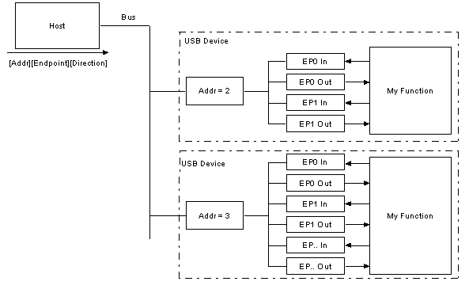

[Глава 3: протоколы USB]
В отличие от RS-232 и похожих последовательных интерфейсов, где формат отправляемых данных не задан, USB составлен из нескольких слоев протоколов. Звучит сложно, но не опускайте руки. Как только поймете, что происходит, нужно беспокоиться только о протоколах верхних уровней. Фактически большинство контроллеров USB берет на себя заботу о нижних уровнях протоколов, делая их невидимыми для конечного разработчика.
Каждая транзакция USB состоит из:
Как мы уже упоминали - USB является шиной, где главным является хост. Хост начинает все транзакции. Первый пакет, так называемый token, генерируется хостом для описания того, что проследует далее и будет ли это транзакция чтения или записи, и какой адрес устройства и определенная конечная точка (endpoint). Следующий пакет обычно пакет данных, несущий полезную нагрузку, за которым идет пакет рукопожатия (handshaking packet), сообщающий о том, что данные или token были приняты успешно, или конечная точка (endpoint) остановлена (stalled) или недоступна для принятия данных.
Общие поля пакета USB
Данные на шине USB передаются в порядке, когда первым идет LSB (Least Significant Bit, младший значащий бит). Пакеты USB состоят из следующих полей:
Все пакеты должны начинаться с поля синхронизации (sync). Поле sync имеет длину 8 бит на low speed и full speed или 32 бита на high speed, и используется для синхронизации тактов приемника с тактами передатчика. Последние 2 бита показывают, где начинается поле PID.
PID означает Packet ID. Это поле используется для обозначения типа пакета, который сейчас отправляется. Следующая таблица показывает возможные значения этого поля.
|
Группа |
Значение PID |
Идентификатор пакета |
|
Token |
0001 |
OUT Token |
|
1001 |
IN Token | |
|
0101 |
SOF Token | |
|
1101 |
SETUP Token | |
|
Data |
0011 |
DATA0 |
|
1011 |
DATA1 | |
|
0111 |
DATA2 | |
|
1111 |
MDATA | |
|
Handshake |
0010 |
ACK Handshake |
|
1010 |
NAK Handshake | |
|
1110 |
STALL Handshake | |
|
0110 |
NYET (No Response Yet) | |
|
Special |
1100 |
PREamble |
|
1100 |
ERR | |
|
1000 |
Split | |
|
0100 |
Ping |
У PID здесь 4 бита, однако чтобы обеспечить его правильный прием, 4 бита дополнены (complemented) и повторены, в результате получился 8-битный PID. Полученный формат показан ниже:
|
PID0 |
PID1 |
PID2 |
PID3 |
nPID0 |
nPID1 |
nPID2 |
nPID3 |
Поле адреса указывает, какому из устройств USB предназначен пакет. Адрес имеет длину 7 бит, что позволяет адресовать до 127 поддерживаемых одновременно устройств. Адрес 0 недопустим, он предназначен для устройств, адрес для которых пока не назначен. Любое устройство, которому не назначен адрес, должно отвечать на пакет с адресом 0
Поле endpoint составлено из 4 бит, что позволяет 16 возможных конечных точек. Однако устройства low speed могут иметь только 2 дополнительные конечные точки сверх заданного по умолчанию канала (4 конечных точки максимум).
Cyclic Redundancy Checks (Циклическая Избыточная проверка) выполняется над данными в пределах полезной нагрузки пакета. Все пакеты token имеют 5 бит CRC, а пакеты data имеют 16 бит CRC.
End of packet, конец пакета. Сигнализируется несимметричным нулем (Single Ended Zero, SE0) на время примерно 2 бита, и далее следует состояние J длительностью 1 бит.
Типы пакетов USB
USB имеет 4 разных типа пакета. Пакеты token индицируют тип последующей транзакции, пакеты data содержат payload, пакеты handshake используются для подтверждения данных или сообщений об ошибках, и пакеты start of frame (SOF) показывают начало нового фрейма.
Имеется 3 типа пакетов token:
In – информируют устройство USB о том, что хост хочет прочитать информацию.
Out - информируют устройство USB о том, что хост хочет отправить информацию.
Setup – используется для начала управляющих передач (control transfers).
Пакеты token должны удовлетворять следующему формату:
|
Sync |
PID |
ADDR |
ENDP |
CRC5 |
EOP |
Имеется 2 типа пакетов данных, каждый из которых может передать до 1024 байта данных.
Data0
Data1
Режим High Speed задает два других data PID - DATA2 и MDATA.
Пакеты Data имеют следующий формат:
|
Sync |
PID |
Data |
CRC16 |
EOP |
Максимальный размер полезной нагрузки (payload) для low-speed устройств составляет 8 байт. Максимальный размер полезной нагрузки для full-speed устройств составляет 1023 байт. Максимальный размер полезной нагрузки для high-speed устройств составляет 1024 байт. Данные нужно послать в единицах байт.
Имеется 3 типа пакетов handshake, которые состоят просто из PID
ACK – подтверждение о том, что пакет успешно принят. NAK – сообщение о том, что устройство временно не может отправить или принять данные. Также используется в interrupt транзакциях для информирования хоста о том, что нет никаких данных для передачи. STALL – устройство находится в состоянии, которое требует вмешательства со стороны хоста.
Пакеты handshake имеют следующий формат:
|
Sync |
PID |
EOP |
Пакет SOF состоит из 11-битного номера фрейма, отсылаемого хостом каждые 1ms ± 500ns на full speed или каждые 125 µs ± 0.0625 µs на high speed.
|
Sync |
PID |
Frame Number |
CRC5 |
EOP |
Сейчас мы уже должны знать ряд понятий, составляющих пакет USB. Нет? Вы уже забыли, сколько бит входит в поле PID? Не будьте слишком обеспокоены этим. К счастью, большинство функций USB уже в кремнии (специальных чипах) получают обработку низких уровней протокола USB (до слоя транзакций, который мы рассмотрим в следующей главе). Мы рассматриваем информацию о низких слоях протокола USB потому, что большинство контроллеров функций USB сообщают об ошибках, таких как PID Encoding Error. Не рассмотрев бегло низкий уровень, можно было бы спросить, что означает PID Encoding Error? Если бы Вы предположили, что последние четыре бита PID не соответствовали инверсии первых четырех битов, то Вы были бы правы.

У большинства функций есть серия буферов, обычно 8 байт длиной. Каждый буфер будет принадлежать конечной точке (endpoint) - EP0 IN, EP0 OUT и т. п.. Например, хост отправляет запрос дескриптора устройства (device descriptor request). Функция аппаратно прочитает пакет setup и определит из поля адреса, предназначен ли пакет именно ей, и если да, то скопирует полезную нагрузку (payload) последующего пакета данных в соответствующий буфер конечной точки, заданный величиной в поле endpoint токена setup. Также отправится пакет handshake для подтверждения приема байта и сгенерируется внутреннее прерывание в микроконтроллере для соответствующей конечной точки, обозначающее, что пакет был принят. Все это делается обычно в «железе» (аппаратуре чипа контроллера USB устройства).
Программное обеспечение (firmware микроконтроллера) получит прерывание, в котором оно должно прочитать содержимое буфера конечной точки и проанализировать запрос на дескриптор устройства (parse device descriptor request).
Конечные точки (endpoints)
Конечные точки могут быть описаны как источники или приемники данных. Поскольку шина является хосториентированной, конечные точки оказываются в конце канала связи, на функции USB. Например, на уровне программного обеспечения Ваш драйвер устройства может отправлять пакет в конечную точку EP1 устройства. Так как данные поступают от хоста, они попадут в OUT буфер EP1. Ваше firmware теперь может не спеша прочитать эти данные. Если устройство хочет вернуть данные, функция не может просто записать их на шину, так как шина полностью управляется хостом. Поэтому firmware помещает данные в буфер EP1 IN, и эти данные находятся в буфере до тех пор, пока хост не отправит пакет IN, которым он запрашивает данные конечной точки. Конечные точки можно также рассматривать как интерфейс между железом функции устройства и firmware, работающем на функции устройства.
Все устройства должны поддерживать конечную точку 0. Это конечная точка, которая принимает все управляющие запросы и запросы статуса во время энумерации и в течение всего времени, когда устройство остается работоспособным на шине.
Потоки, или каналы (Pipes, дословно - трубы)
Когда устройство отправляет и принимает данные через несколько конечных точек, клиентское программное обеспечение передает данные через потоки. Поток – логическое соединение между хостом и конечной точкой (точками). Потоки также имеют набор параметров – тип передачи (Control, Bulk, Iso или Interrupt), направление потока данных и максимальные размеры пакета/буфера. Например, поток по умолчанию – двунаправленный поток, составленный из IN конечной точки 0 и OUT конечной точки 0 с типом передачи control.
USB определяет два типа потоков (pipes)